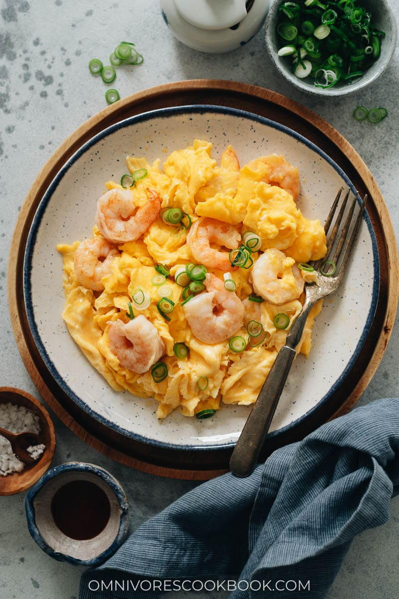

Chinese Scrambled Eggs with Shrimp

Description
Chinese scrambled eggs with shrimp is a Cantonese home-style dish that
is simple and delicious. It can be prepared in 10 minutes and requires
only a few ingredients.
Ingredients
- 4oz Shrimp
- 3 Eggs
- 1 Scallion
- Salt
- Sesame Oil
- Sugar
- White Pepper
- Corn Starch
Steps
- In a bowl, mix the shrimp, salt, white pepper, and corn starch until
well coated.
- In a separate bowl, mix more corn starch with water to make a slurry.
- Combine the eggs, salt, sugar, white pepper, starch slurry, and
chopped scallions.
- In a pan, heat 1 tbsp oil over medium high heat. Add the shrimp and cook
until they are mostly cooked. Remove the shrimp and add them directly to
the egg mixture.
- Heat another tbsp of oil on the pan over medium high heat. Add the egg
mixture and cook for about 30 seconds.
- As the egg cooks, use a spatula to fold the sides over on top of the center.
Do this 3 to 4 times. Be sure not to scramble or stir the eggs too much.
- Turn the heat off and cook until they reach your desired doneness.